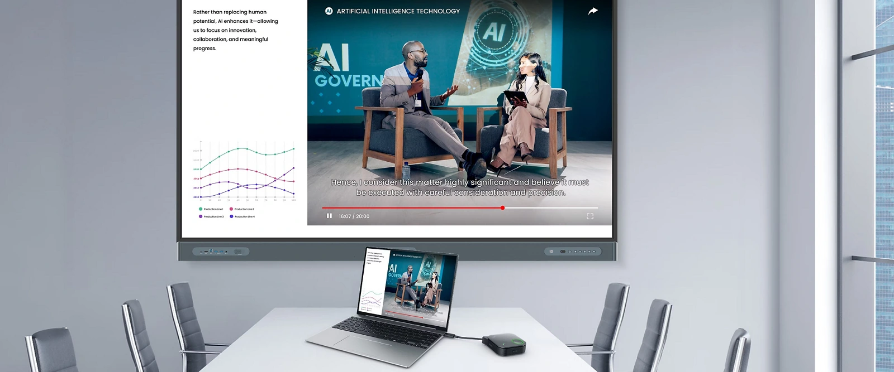
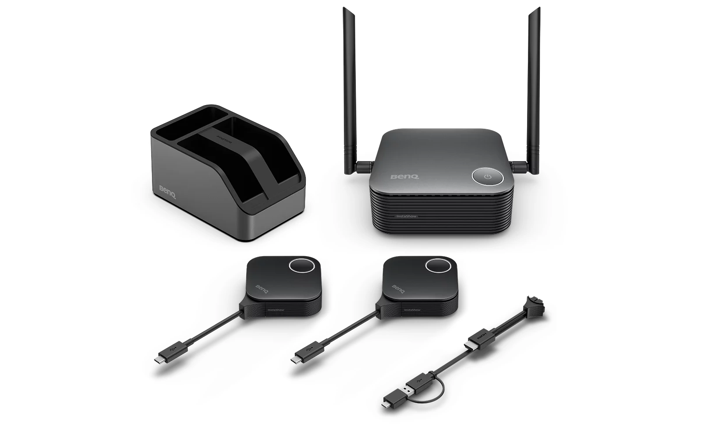
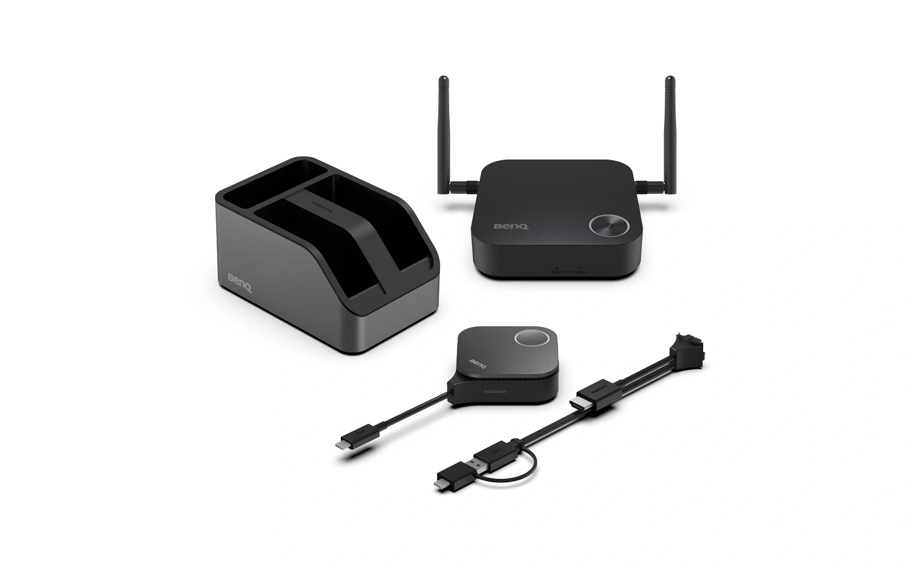
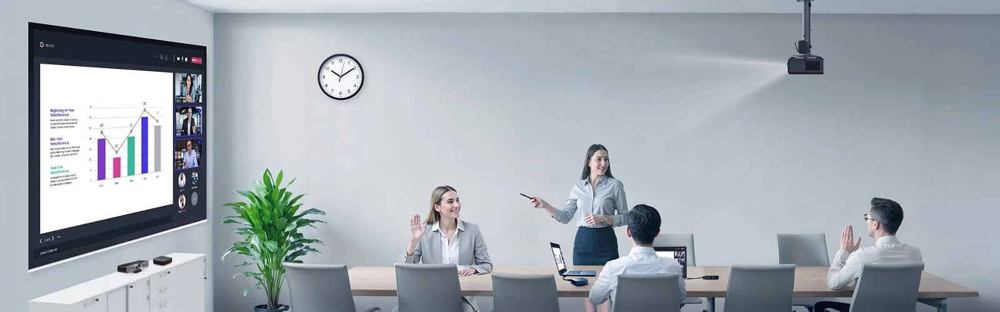
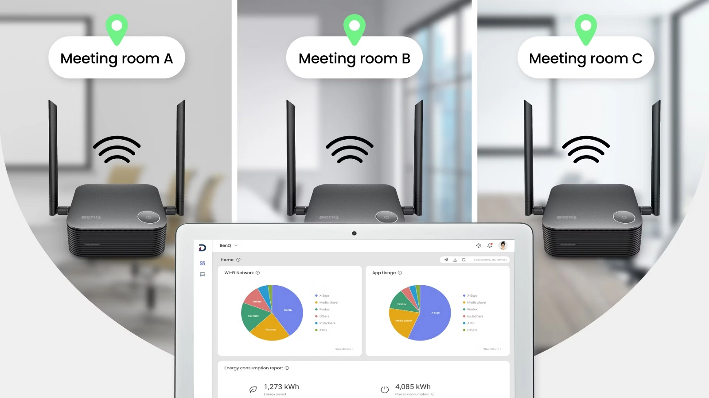

BenQ 官方情境示意 校園無線分享提案HIGHER EDUCATION / 2026.10

READY TO SHARE接上筆電，按鍵分享
WDC15WDC25VS25
向下探索 SCROLL TO EXPLORE
大專院校應用 教師授課 / 小組報告 / 系所會議
01 CAMPUS SCENARIOS
同一間教室，
讓更多人參與。
教師的教材。學生的成果。來賓的觀點。
從校園裡熟悉的分享情境開始規劃。
02 PLUG. PRESS. SHARE.
連接設備。
接上筆電。
按下分享。
接收器連接教室顯示設備，
發射器交給下一位分享者。
CONNECTION GUIDE操作概念示意
顯示設備已連接等待筆電分享
HOST
YOUR LAPTOP
01 / 03 接收器連接教室顯示設備
以硬體發射器進行基本無線投影
WindowsmacOSLinuxChromeOS
遠距會議仍需由筆電連網，並使用相應的會議應用程式。
03 CHOOSE YOUR INSTASHOW
從分享方式，
找到適合的機型。
輪流報告。同畫面討論。遠距共用影音。
依照教室與會議室的使用需求選擇。

4K30Hz接收器 HDMI 最高輸出
16台同時連線上限
1個畫面單一畫面分享
規格放在一起，差異更清楚。
MODEL COMPARISON← 左右滑動查看完整比較 →
| 比較項目 | WDC15 | WDC25 | VS25 |
|---|---|---|---|
| 本提案定位 | 單一畫面簡報 | 多裝置課堂分享 | 混合會議與遠距討論 |
| HDMI 最高輸出1 | 4K 30Hz | 4K 60Hz | 4K 60Hz |
| 同時連線上限 | 16 台 | 64 台 | 64 台 |
| 畫面分享方式2 | 單一畫面 | 最多四分割 | 最多四分割 |
| 行動裝置原生投屏 | 未提供 | 支援 | 支援 |
| BYOM 影音周邊 | 未提供 | 未提供 | 支援 |
| Cloud DMS 管理 | 未列示 | 支援 | 支援 |
| 原簡報建議售價3 | NT$ 24,900 | NT$ 45,900 | NT$ 64,900 |
1 4K 60Hz 指接收器 HDMI 輸出。原簡報註明發射器輸入最高 4K 30fps；實際顯示依來源內容與教室設備而定。
2 同時連線數與同畫面分享數為不同規格。VS25 四分割資訊沿用原簡報，採購時請核對機型文件。
3 售價取自 2026 年 10 月原簡報，供規劃參考。實際採購金額依最新報價確認。
規格來源：WDC15 官方規格 / WDC25 官方規格 / VS25 官方規格
04 TEACHING & COLLABORATION
從教材展示，
延伸到每一場討論。

BenQ 官方情境示意VS25 / BRING YOUR OWN MEETING用自己的筆電，
用自己的筆電，
主持跨校會議。
VS25 的 BYOM 應用，讓筆電使用會議室相容的 USB 攝影機與收音設備。
- 01將相容 USB 會議周邊連接至 MTX 多媒體發射器
- 02筆電接上發射器並開啟會議軟體
- 03在會議軟體中選取對應影音設備
遠距會議需由筆電連網。影音周邊請依官方相容清單核對。
05 IT & MAINTENANCE
課堂要好用，
管理也要接得上。
將資訊單位的確認事項，
一起放進教室設備規劃。
AES128 傳輸加密
三款機型的官方規格均列示 AES128。資安設定與校內管理規範由校方資訊單位確認。
Cloud DMS 集中管理
WDC25 與 VS25 列有 Cloud DMS 管理功能。使用前確認連網條件及校方管理政策。
可更換式接頭
依機型更換 HDMI 或 USB-C 接頭，選型時核對筆電介面與所需配件。

06 START WITH YOUR ROOM
下一間教室，
需要哪一種分享？
選擇主要使用需求，
對照原簡報的機型定位。
建議優先評估WDC15
對應單一畫面簡報，適合以輪流分享為主的使用需求。
實機確認清單
點選已確認的項目，作為本次評估備忘。
07 OFFICIAL RESOURCES
每一項規劃，
都有資料可查。
官方規格查核
2026.10.29
2026.10.29
01InstaShow 系列介紹系列應用與操作說明02WDC15 台灣規格單一畫面簡報03WDC25 台灣規格多裝置課堂分享04VS25 台灣規格BYOM 混合會議05WDC25 中文使用手冊PDF / 安裝與操作06觸控與會議周邊相容清單TouchBack 與 USB 周邊
內容來源與閱讀說明+
本頁依上傳的「華泰文化_BenQ_InstaShow_校園推廣_20261029(1).pptx」11 頁內容轉製。產品與情境圖片沿用簡報中的 BenQ 官方素材，情境示意不代表校園採用實績。機型定位屬本提案的應用建議。
數值規格依 BenQ 台灣官網於 2026 年 10 月 29 日查核；VS25 四分割資訊與三款建議售價沿用原簡報，採購時請核對最新文件與報價。相容性與功能表現以實際設備及官方資料為準。
操作互動為概念示意。評估清單僅用於當次瀏覽，重新整理頁面即重設。